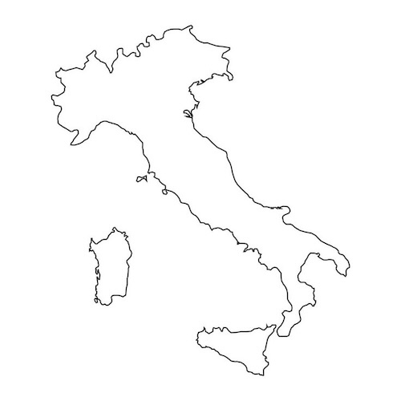

NORDITALIEN
LOKATIONERNE
Cesane Forest, Urbino
Just a place where time doesn't pass, very green, pure air and enchanting landscapes of Marche hills.
Urbino, Marche Region
En af Italiens mindste Rennessaince hovedstæder og faktisk et af UNESCOS arv. Dets historiske bygninger og gamle smalle gader gør byen værd at udforske.
Numana & Sirolo, Marche region
I den sydlige del af Marche regionen finder man afsindigt smukt vand og lyse strande.
Dolomites 3 cime di Lavaredo
Trentino Alto Adige: Under trekking ved Dolomiterne kan man finde de smukkeste udsigter og landskaber, hvor man føler sig fri.
Bologna, Emilia Romagna Region
JA beautiful city with an amazing vibe. The cultural scene is still vibrant, with lots to do, bars, clubs, vintage markets. The food scene is also incredible.
Como, Lombardiet Region
I think my city is a little gem, small, located on the lake, and really beautiful. Swimming in the Lake como. City market on weekends: there is a market every Tuesday, Thursday, and Saturday. I think it's beautiful to walk around and shop there. You find farmers, clothes, useful things etc
Grignetta, Lombardiet Region
Hiking in the mountains. The landscape is breathtaking. The hike isn't easy, but the view from the top is incredible.
Il Corazziere, Como
A locals favorite restaurant. Very classy, with a huge wine selection, located in a beautiful park.

Bar Giallo Loretello, Marche Region
Afslappet, hyggeligt og roligt apperitivospot ude i Marches bakker. Nyd et glas vin og snacks, mens du ser solnedgangen. Desuden kan man se den smukke natur under køreturen dertil. Desuden ligger det ved et lille slot ved navn Castello di Loretello.